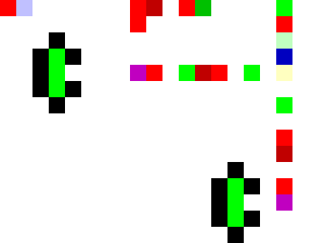

Esolang: Piet, an easy tutorial
Introduction
Piet is a so-called esotheric programming language (esolang). A program in Piet differs from a program in a conventional programming language since it is a colourful picture. The specifications of the Piet language can be found here.
When programming in Piet the following tables are the essential refence.
|
|
||||||||||||||||||||||||||||||||||||||||||||||||||||||||
In a Piet program the colours themselves do not matter, it's the transitions in hue and darkness that form the code.
An example
The following picture is a Piet program that asks the user for a number and calculates its square.
Starting in the top right codel (= enlarged pixel, examples here use codel size 20) and going right we get:
|
As said before, the colours are not important, the transitions are. Hence the above program could also be given as , wich is clearly much more compact, but less artistic ...
Either way the programs are fine, but not quite readable for a human. To solve this (with the hope of writing longer programs) we choose to insert white codels, so as to breakdown the picture in recognisable codepieces. Moreover we will start any stack-changing code with red and any flow-changing code with green. Our program becomes:
|
Elementary codepieces
Starting any stack-changing code with red, we get the following codepieces.
- input/output:
- : in(number)
- : out(number)
- stack operations:
- : duplicate
- : pop (forget)
- math operations:
- : add
- : substract
- : multiply
- : divide
- : mod
Numbers on a stack
Now that we've managed to code somewhat clearly in Piet, we're going to use the stack for more complicated things. Lets try to put a number on the stack. Numbers in Piet are surfaces of the same color. They are pushed on the stack by means of the push command which is a darkness shift 1. Pushing 6 on the stack is coded as
Often we want to put several numbers on the stack. This can be done by alternating shades of different surfaces. For instance the sequence of even numbers 2,4,6,8 is put on the stack as follows
A special case is when we want to put 0 on the stack. This is achieved by push 1-not: .
Once we have numbers on a stack, we'd like to use them as counters. In order to increment a number we add 1. Hence we get
- numbers:
- : push 6
- : pushzero
- : push 6
- counters:
- : increment
- : decrement
Controlling the flow
Any programming language has the ability to keep values stored (either as variables or in a stack) and the necessary operations on these values (+,-,*,/, ...). Piet does this as described above. Besides this, we'd like to have conditional branching and loops. Any flow-changing code will start with a green codel.
Conditional statements are achieved by means of the pointer command, which changes the flow of the program clockwise, according to the top value on the stack. Following codepiece describes duplicate-not-not-pointer
The top value is duplicated and, by means of the double negation, replaced by 1 if it is non-zero or by 0 if it was zero. The pointer command follows. Hence if the top value is 0 the flow goes straight ahead, else it is turned clockwise and goes downwards. This gives us an ifzero codepiece.
An infinite loop is easily created.
Combining this with the above conditional branching we can make a loop until the top value is 0.
- flow-control:
- : ifzero
- : loop until zero
- : end program
- : ifzero
Examples
- The following program uses the above conditional branching to determine if an user input is even or odd. The codepieces are:
in(number)-push 2-mod-ifzero { push 1-out(number)-end program } -pushzero-out(number)-end program
 - A countdown. The codepieces are:
push 10-start loop-duplicate-out(number)-decr-ifzero { end program } -next loop
Accessing the stack
Using the stack can be somewhat complicated. We'll introduce two codepieces to put and retrieve a value to/from an arbitrary place in the stack. The Piet command needed is roll. roll will bury a value too a certain depth (in the example below 3) in the stack. It is used as follows.
| Stack | push 3
push 1 |
roll | piet code |
|---|---|---|---|
|
10
9 8 7 6 |
1
3 10 9 8 7 6 |
9
8 10 7 6 |
Using roll with -1 instead of 1 allows to retreive a value from the stack.
| Stack | push 3
push 1-push 2-substract |
roll | piet code |
|---|---|---|---|
|
10
9 8 7 6 |
-1
3 10 9 8 7 6 |
8
10 9 7 6 |
We now have the codepieces
- stack access:
- : put 3
- : get 3
- : put 3
Making art
We are now able to write some more example programs in Piet.
- factorial: The user is asked for a number n and n! is calculated. The codepieces are as follows.
- in(number)
- duplicate
- begin loop (stack: counter, temp result)
- decr
- duplicate
- put 3 (counter is copied to the bottom of the stack)
- ifzero { pop (forget counter) -out(number)-end program}
- multiply
- put 2(result is placed on bottom of the stack, counter goes to the top)
- next loop
After creating the program, the flow must be checked and guided by black codels. In the lower put instruction a black codel has been added in order to control to keep the correct flow.
Once the program is done and working, you can add artwork in the remaining white space, keeping in mind that the flow must not be changed.
- isprime: The user is asked for a number. 1 is returned if the number is a prime, else the largest divider is returned.
- in(number)
- duplicate
- begin loop (stack: counter=possible divider, number)
- decr
- put 2
- duplicate
- get 3
- put 2
- duplicate
- put 3 (stack: possible divider, number, possible divider, number)
- mod
- ifzero { out(number)-end program } (ends if possible divider is found or equal to 1)
- next loop
Arty version:
- Fibonacci numbers: The user is prompted for number, Fibonacci sequence of length number is returned.
- push 1
- push 1
- in(number) (length of the sequence)
- begin loop (stack: counter,Fn-1,Fn-2)
- put 3
- duplicate
- put 3 (stack: Fn-1,Fn-2,Fn-1,counter)
- add (stack: Fn,Fn-1,counter)
- duplicate
- out(num)
- get 3
- decr (stack: counter,Fn,Fn-1)
- ifzero { end program } (end program if counter equal to 0)
- next loop
Reference
input/output:
|
stack operations:
|
math operations:
|
flow-control:
|
numbers:
|
counters:
|
stack access:
|